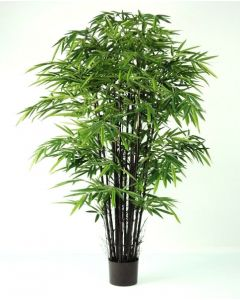
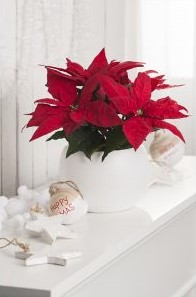
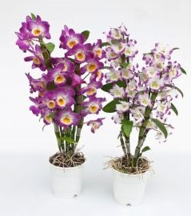
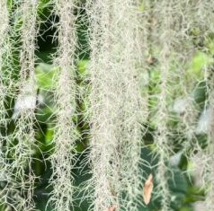
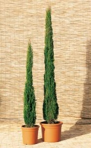
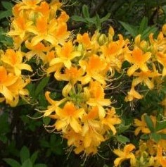
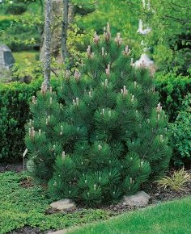

Nous proposons a nos clients un gamme de plantes d'interieur mais aussi d'exterieur
|  | Cette plante se plaira aussi bien en pleine terre qu'en pot posé sur un balcon. Il est possible de décorer son intérieur avec un bambou. |
|  | Le poinsettia est l’une des plus jolies plantes d’intérieur, souvent remarquable au moment des fêtes de fin d’année et de Noël. |
|  | Conseils de culture : cultivez vos Dendrobium nobile dans un terreau spécial orchidées, dans des pots de faibles dimensions. Installez-les dans une pièce lumineuse, sans contact direct avec le soleil. De mai à septembre, arrosez vos Dendrobium nobile une à deux fois par semaine. |
|  | La floraison des tillandsias peut s’étaler sur plusieurs mois. Elle démarre généralement au début de l’hiver pour se terminer au début du printemps. Leurs fleurs offrent des couleurs intenses variant du jaune au rouge en passant par le bleu, le rose, le violet ou le mauve. Grâce à leur floraison spectaculaire, les filles de l’air apporteront une touche colorée et exotique à votre intérieur. |
Fleur de lune
yucca
phalengere
lierre
|  | Le cyprès, conifère à la forme érigée, semble vouloir toucher le ciel de sa pointe élancée.Sa silhouette évoque la douceur des paysages italiens légèrement vallonnés et la chaleur de la Provence. |
|  | Description Les rhododendrons ou azalées forment un genre de plantes appartenant à la famille des Éricacées. À l'exception des groupes tropicaux Azaleastrum et Vireya, les rhododendrons sont essentiellement rustiques. |
|  | Ce conifère dispose d'une forme trapue et pyramidale, les ramifications sont denses. À taille adulte il atteindra 3 mètres d haut mais sa croissance est très lente à 10 ans il ne fera que 2 mètres de haut. Placer le dans une rocaille pour une utilisation optimale. |